Laws, decrees, orders, textbooks and records issued by Russia and its occupation authorities in Ukraine. Each has an English translation, key provisions in English, or an English summary.
Collections
Start with a question
Find a document
How to read these documents
Russian act types
- FKZ
- Federal constitutional law. Used to admit territory to the Russian Federation.
- FZ
- Federal law, passed by the Duma and signed by the President.
- Ukaz
- Presidential decree.
- Postanovlenie
- Government resolution, or a decree of a regional or city administration.
- Rasporyazhenie
- Order of a government or administration, usually on a single matter.
- Prikaz
- Ministry or agency order.
- Pismo
- Ministry letter: guidance sent to regions or schools.
Names and translations
Occupation bodies are listed under the names they use for themselves, such as the "DPR" or the "Ministry of Education of Zaporizhzhia Oblast". That describes the source. It does not recognise it.
Full translation: the whole text is in English. Key provisions: the operative parts are translated and the rest summarised. English summary: the document is in Russian with an English description. AI-assisted: a machine translation checked by the team; the Russian original is the authoritative text.
Photo galleries and image carousels of primary-source imagery.
Military recruitment advertising, occupied Mariupol
Field photographs of Russian military and penitentiary-service recruitment and contract-service advertising posted publicly in occupied Mariupol, March 2026. Federal, regional (including the Republic of Kalmykia), and prison-service (FSIN) campaigns compete to recruit from the occupied population.
War destruction in Mariupol
Field photographs of war-destroyed and damaged buildings across occupied Mariupol, including the shrapnel-scarred wall marked “ЛЮДИ” (people).
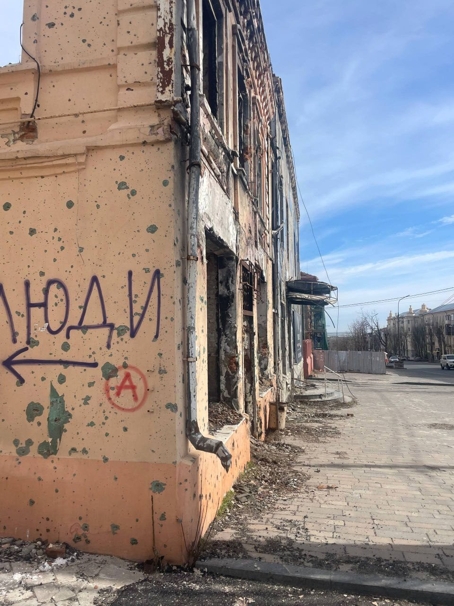
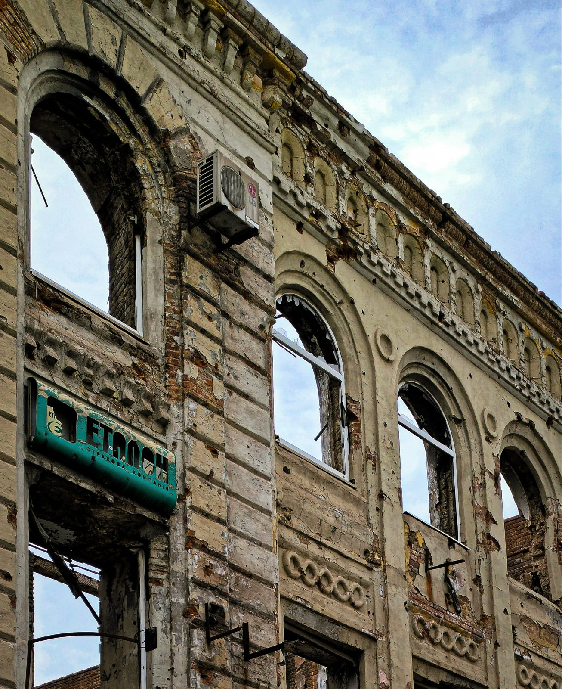
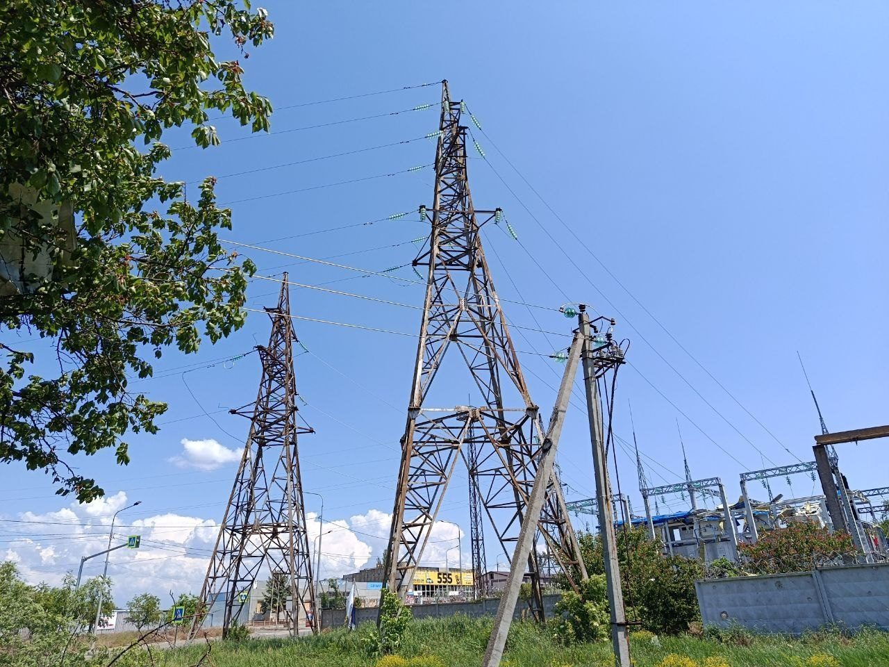
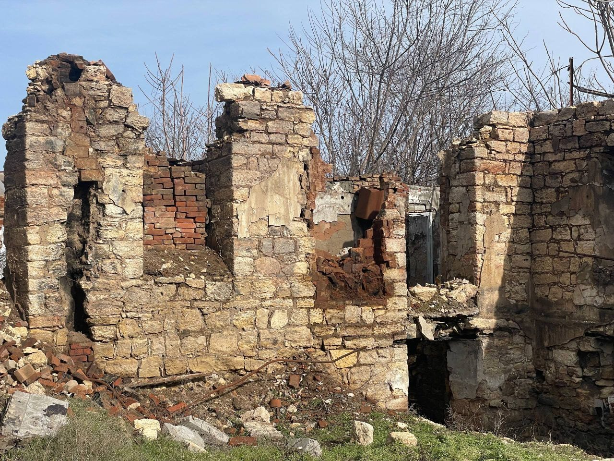
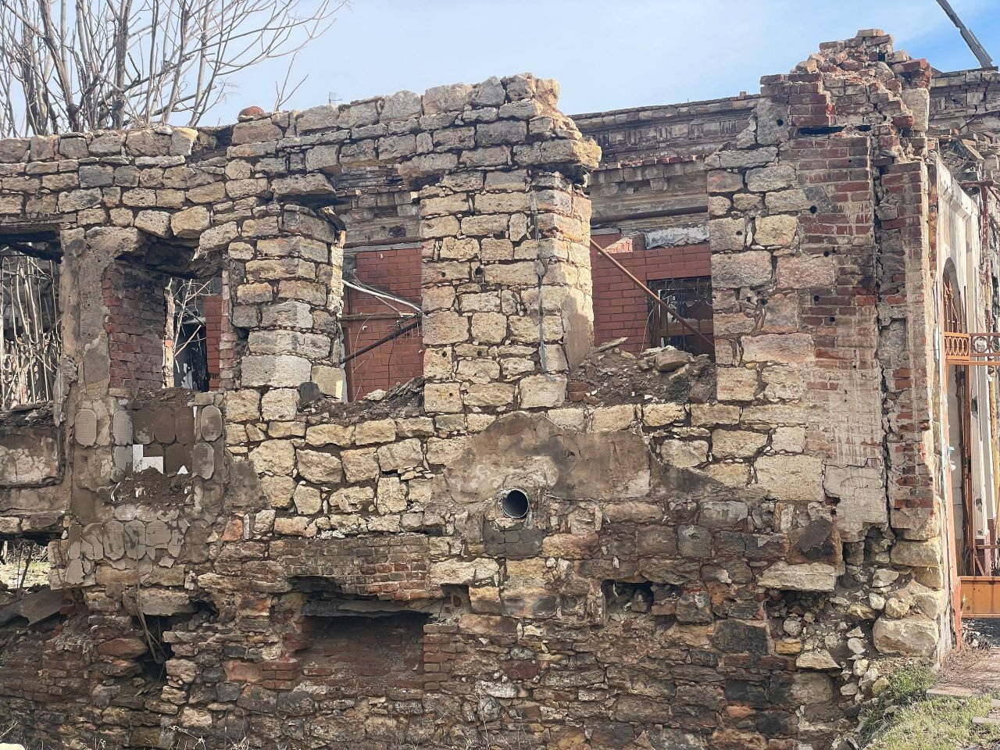
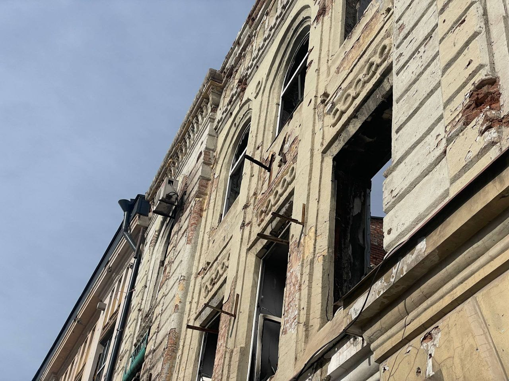
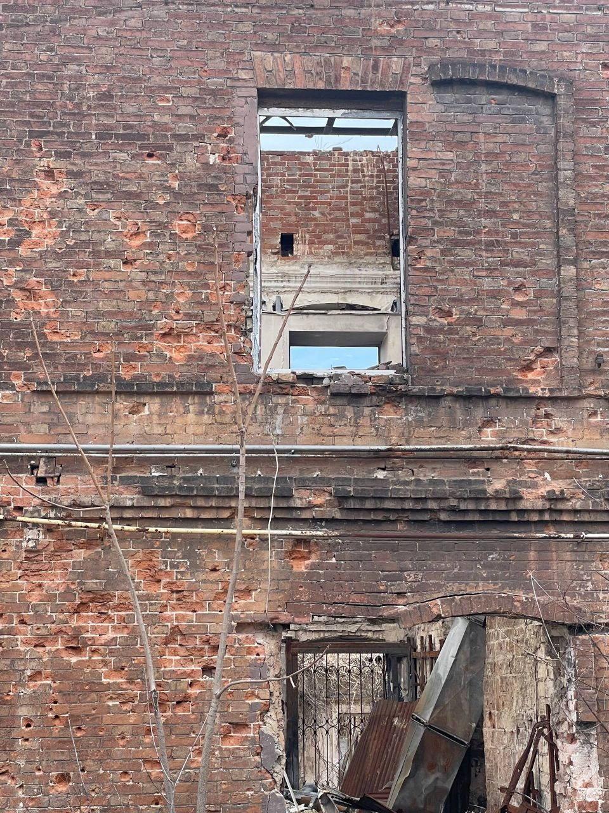
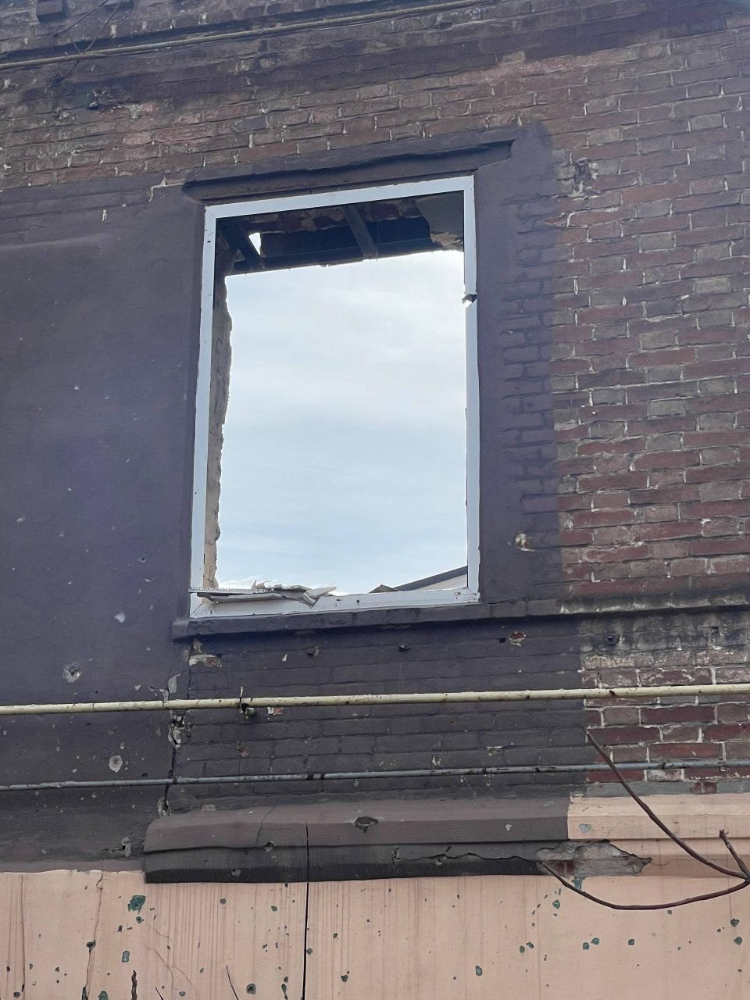
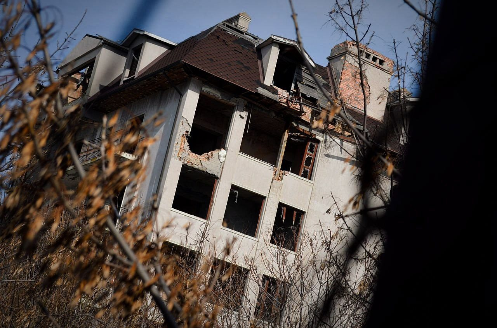
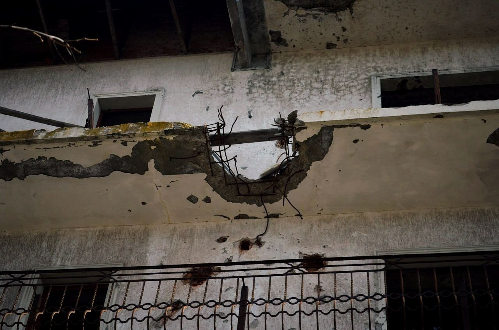
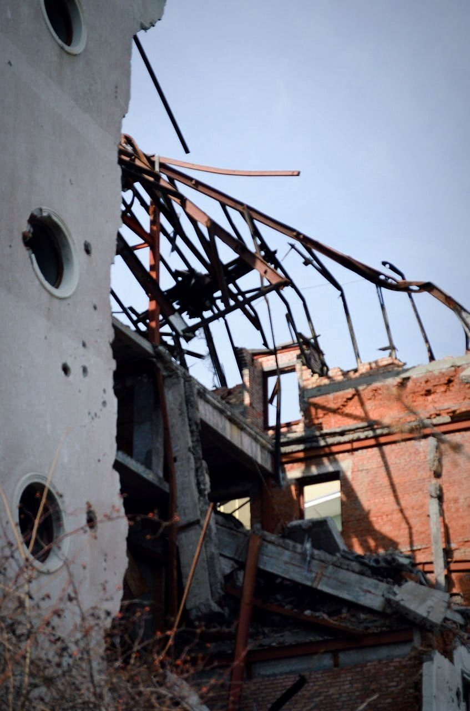
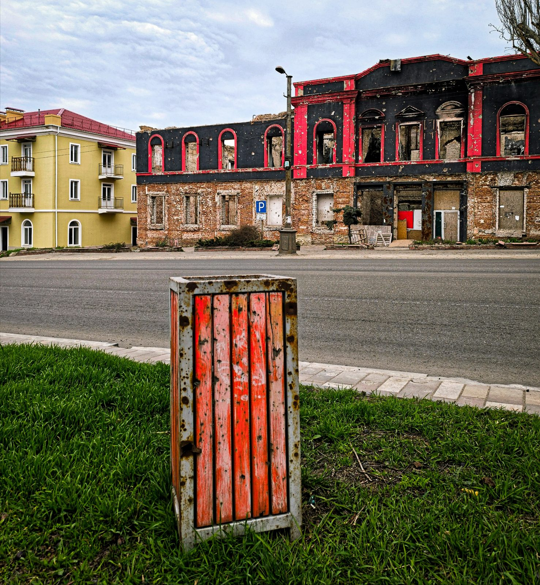


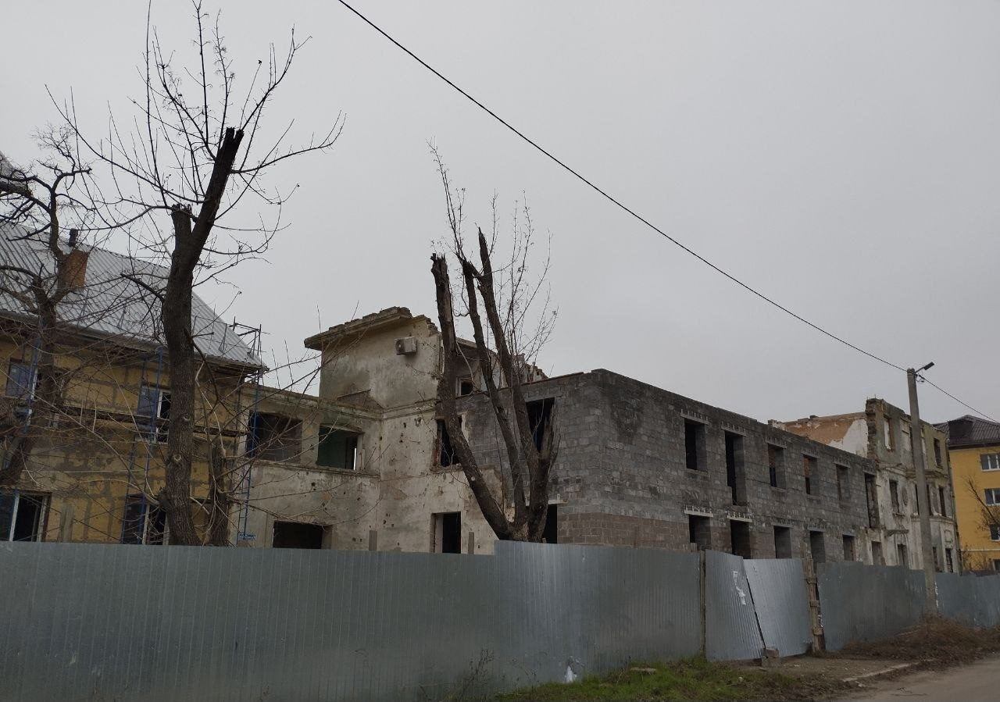
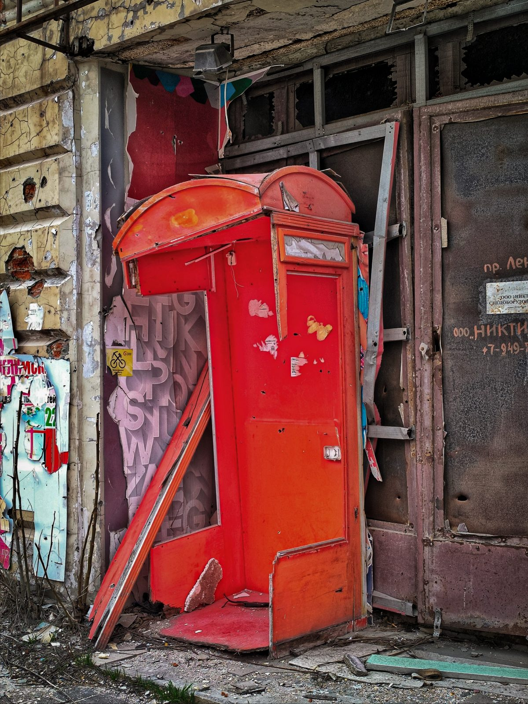